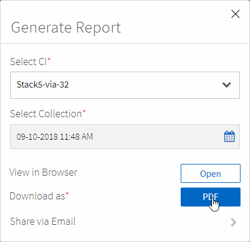

Notas de la versión
Notas de la versión
Supervisar su infraestructura convergente
 Sugerir cambios
Sugerir cambios
Puede supervisar su infraestructura convergente respondiendo a las alertas, revisando un historial de cambios y generando informes que proporcionen una visión holística de una infraestructura.
Revisión de alertas para reglas y advertencias fallidas
Converged Systems Advisor supervisa constantemente su infraestructura y genera advertencias y errores para asegurarse de que el sistema está configurado y realizando las prácticas recomendadas.
-
Inicie sesión en la "Portal del asesor de sistemas convergentes" Y haga clic en Reglas.
La página Reglas muestra un resumen de todas las reglas. El estado de cada regla es pase, Advertencia o error.
-
Haga clic en el icono de filtro en la columna Estado y seleccione error, Advertencia o ambos.

-
Revise los detalles de cada regla haciendo clic en la flecha situada junto a la columna Estado.

-
Siga las instrucciones de la resolución para solucionar el problema.
Si es necesario, revise el historial de configuración que la infraestructura le ayude a resolver el problema.
El estado de las reglas que ha dirigido debe aparecer como Pass después del próximo período de recopilación del agente.
Reparación de reglas fallidas
El asesor de sistemas convergentes puede resolver algunas reglas fallidas corrigiendo el problema subyacente con la infraestructura convergente.
-
Debe tener la licencia Premium.
-
Debe tener asignado como propietario de la infraestructura convergente.
-
Inicie sesión en la "Portal del asesor de sistemas convergentes" Y haga clic en Reglas.
La página Reglas muestra un resumen de todas las reglas. El estado de cada regla es pase, Advertencia o error.
-
Seleccione Reglas de filtro que se pueden solucionar.
-
Expanda la regla que desea resolver.
-
Haga clic en
 en la esquina superior derecha de la regla expandida.
en la esquina superior derecha de la regla expandida.Si el icono está desactivado, es porque el agente está desconectado, no tiene privilegios de propietario o porque no dispone de una licencia Premium.
-
Si es necesario, rellene los valores de entrada.
Dependiendo de la regla fallida, algunos valores de entrada son necesarios para resolver el problema.
-
Si desea que se lleve a cabo una recopilación de datos después de que la corrección se haya completado correctamente, seleccione la opción recopilar cuando se complete el trabajo de corrección.
-
Haga clic en Ejecutar corrección.
-
Haga clic en Confirmar.
-
Para ver las acciones que se están llevando a cabo para resolver las reglas fallidas, haga clic en el icono Operaciones y seleccione Acción de corrección.

Suprimir reglas fallidas
Converged Systems Advisor le permite suprimir reglas para que no se muestren en la consola y ya no envíen notificaciones por correo electrónico en caso de fallo de regla.
Por ejemplo, no se recomienda activar telnet, pero si prefiere activarlo, puede suprimir la regla.
Debe tener la licencia Premium para configurar notificaciones.
-
En el Panel de control, haga clic en Reglas.
-
Puede buscar las reglas que busca filtrando el contenido de la tabla.
-
Seleccione una o más filas para las reglas que tengan el estado Advertencia o error y haga clic en el icono Alertas.

-
Seleccione una duración y, a continuación, haga clic en Enviar.

|
Si desea activar las alertas, siga estos mismos pasos y seleccione terminar supresión. |
El Asesor de sistemas convergentes ya no le notifica sobre la regla durante el período de tiempo especificado y la regla ya no estará visible en el panel.
Mostrar reglas suprimidas
Puede ver la lista de reglas que se han suprimido y, si lo desea, seleccionar para finalizar la supresión.
-
Haga clic en el icono Configuración y seleccione Reglas suprimidas.

-
Seleccione las reglas suprimidas que desea comenzar a mostrar.
-
Haga clic en el icono Alertas.
-
Seleccione terminar supresión y, a continuación, haga clic en Enviar.
Las alertas se activan para la regla seleccionada y la regla se muestra en la tabla Reglas y el panel de control.
Revisión del historial de una infraestructura
Cuando recibe una alerta acerca de una regla fallida, puede ver un historial de lo que ha cambiado en la configuración para ayudarle a resolver el problema.
-
Seleccione una infraestructura convergente.
-
Haga clic en más > Historial.

-
Haga clic en un día en el calendario para ver el número de advertencias y errores que se identificaron durante cada recopilación de datos.
El número que aparece para cada día corresponde al número de veces que el agente recopiló datos. Por ejemplo, si mantiene el intervalo de recopilación predeterminado de 24 horas, debería ver una recopilación por día. La siguiente imagen muestra una única colección el 27 del mes.

-
Para ver más detalles sobre los datos recopilados, haga clic en vaya a CI Dashboard para obtener una colección.
-
Si es necesario, consulte el historial de la última vez que no se hayan identificado advertencias ni fallos.
La comparación de los datos entre los dos períodos de recopilación puede ayudarle a identificar qué ha cambiado.
Generación de informes
Si tiene una licencia Premium, puede generar varios tipos de informes que proporcionen detalles sobre el estado actual de su infraestructura convergente: Un informe de inventario, un informe de estado, un informe de evaluación, etc.
-
Haga clic en Informes.
-
Seleccione un informe y haga clic en generar.
-
Elija las opciones del informe:
-
Seleccione una infraestructura convergente.
-
Si lo desea, puede cambiar de la colección de datos más reciente a una anterior.
-
Elija cómo desea ver el informe: En su navegador, en un PDF descargado o por correo electrónico.

-
Converged Systems Advisor genera el informe.
Hacer un seguimiento de los contratos de soporte
Puede agregar detalles sobre los contratos de soporte para cada dispositivo en una configuración: La fecha de inicio, la fecha de finalización y el ID del contrato. Esto le permite realizar un seguimiento sencillo de los detalles en una ubicación central para saber cuándo renovar los contratos de soporte para cada dispositivo.
-
Haga clic en Seleccionar un CI y seleccione la infraestructura convergente.
-
En el widget Contrato de soporte, haga clic en el icono Editar contrato.
-
Seleccione Fecha de inicio y Fecha de finalización e introduzca ID de contrato.
-
Haga clic en Enviar.
-
Repita los pasos para cada dispositivo de la configuración.
Converged Systems Advisor ahora muestra los detalles del contrato de soporte de cada dispositivo. Puede ver fácilmente qué dispositivos tienen contratos de soporte activos y caducados.